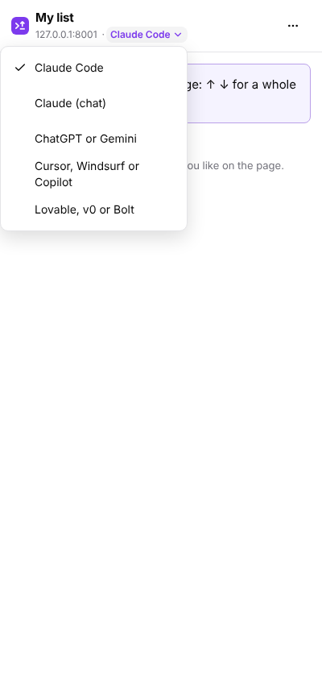
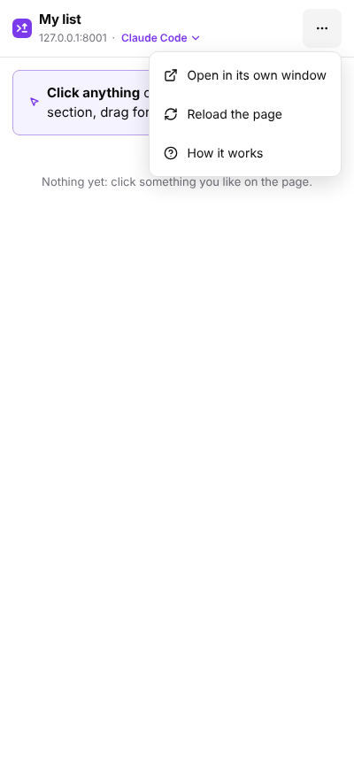
The frame every screen shares
The side panel (or a docked window where there is no side panel). Closing it turns PromptLift fully off.
Header
- Back arrow (on pick screens)
- Logo, screen title; underneath: the site · the AI app (Claude Code ▾), the only setting, remembered
- ⋯: Open in its own window · Reload the page · Clear my list when there is something · How it works
Bottom bar
- A short hint (left) and the one main button (right): Add to my list on a pick, Copy prompt (N parts) on the list
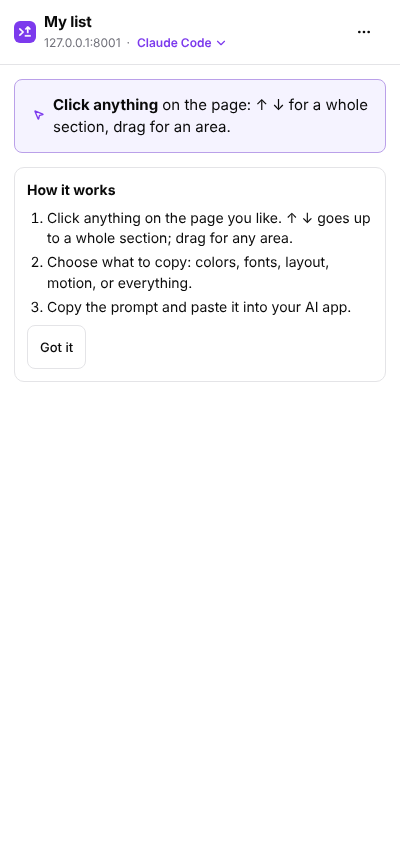
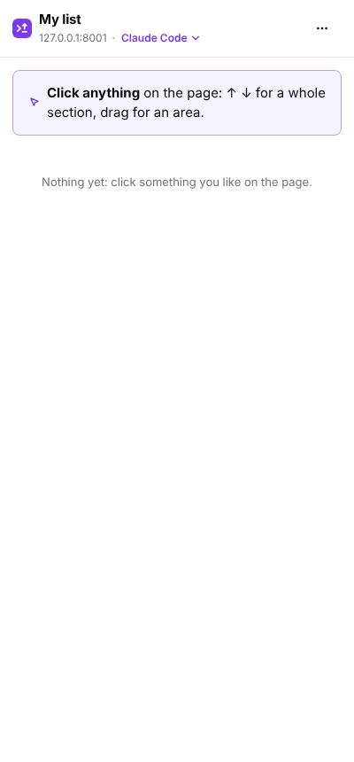
1My list, first time
Where every session starts. Picking is already on.
Structure
- Picking status: Click anything on the page… (or Start picking after Esc)
- How it works + Got it first time only; back via ⋯
- Empty list: one line
Gone from here
- The "An element / A screen portion" choice (one way of picking now)
- "New site or changing", "what is it" (the AI sees the site, or asks)
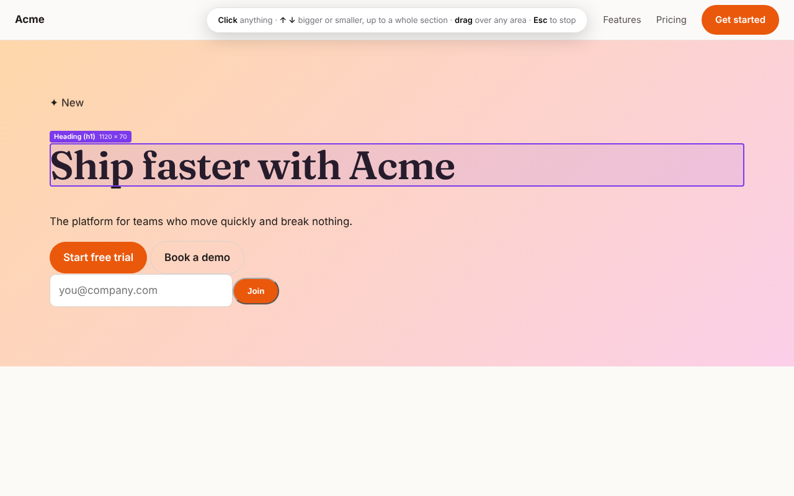
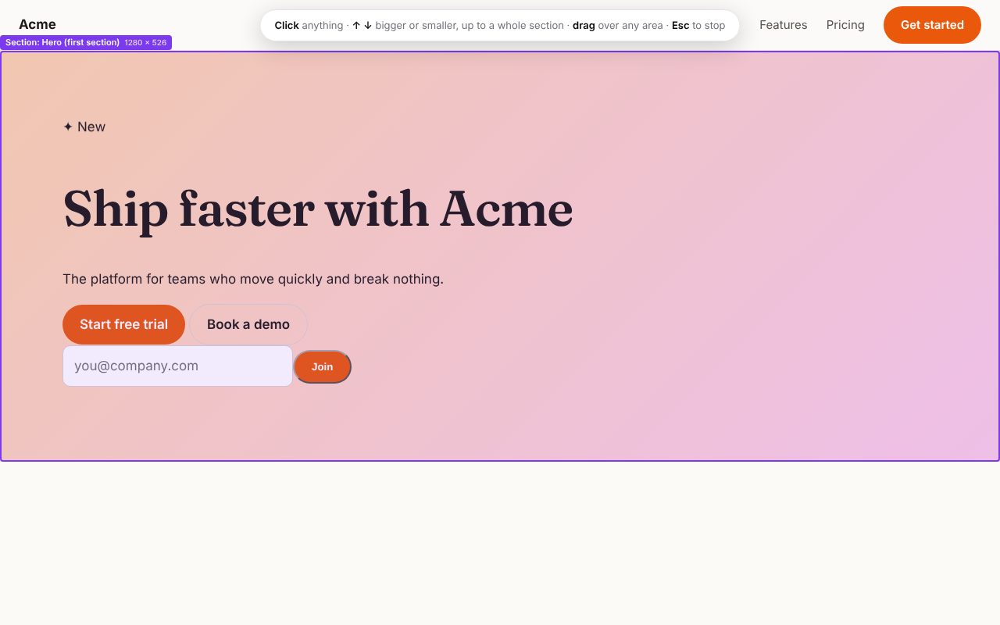
2Point at anything
On the page, while PromptLift is open.
On the page
- Bar: Click anything · ↑ ↓ bigger or smaller, up to a whole section · drag over any area · Esc to stop
- Outline that glides, labeled with what it is and its size; "Section: …" once ↑ reaches a whole section
- Drag: across sections (taken together) or over part of one (just those pieces)
- After a click the outline pulses; the panel says "Reading Card…" (or "Couldn't read that part")
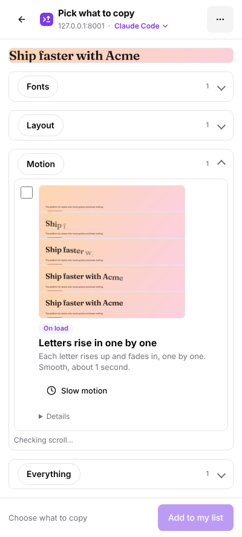
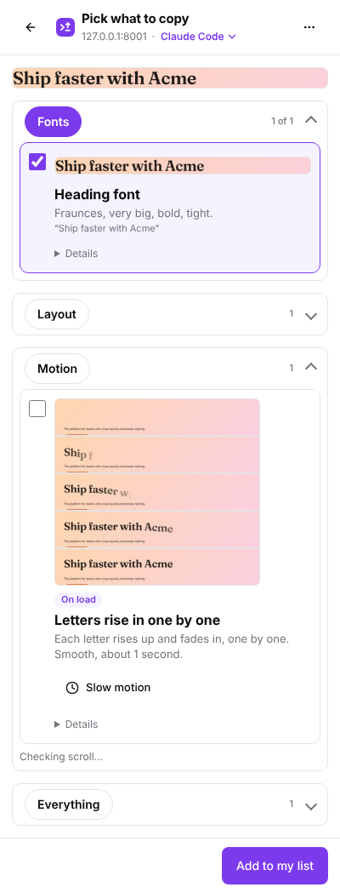
3Pick what to copy: a thing you clicked
Right after clicking something.
Panel
- Picture of the pick
- The five choices, each a group: Colors · Fonts · Layout · Motion · Everything only those with something in them
- The name is a switch: all of it, none, or some (half filled)
- Open a group for single things (one color, one animation)
- Motion opens by itself: a card per animation with a filmstrip (tap to play on the page), Slow motion, Details; then the scroll result; Press it / Reload only when they apply
- Bottom: Choose what to copy → Add to my list
What the switches also decide
- Colors off: an animation's or a text's colors become my site's; on: the original colors stay
- Fonts the same
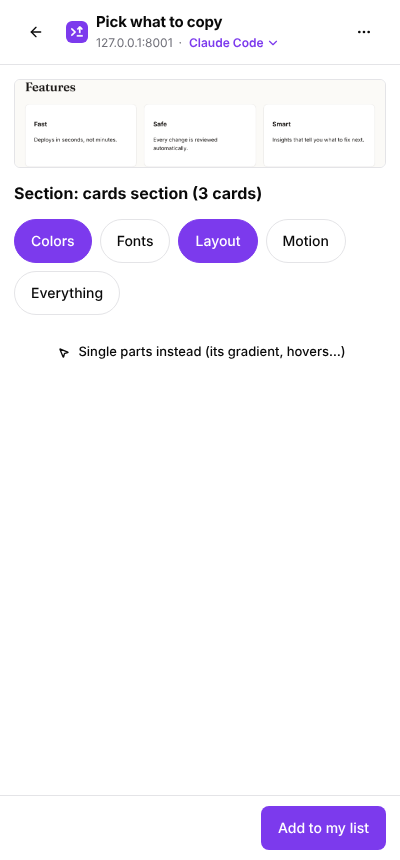
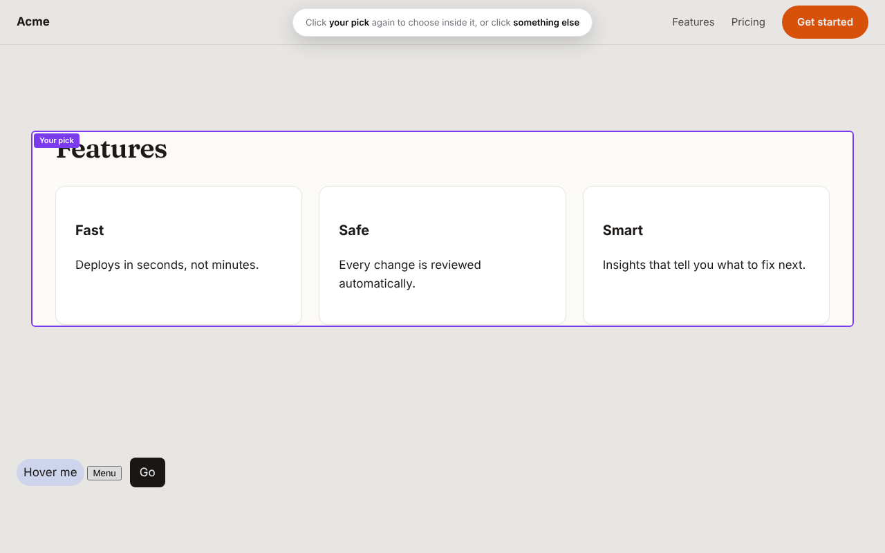
4Pick what to copy: a whole section or a dragged area
After ↑ to a section and a click, or after dragging.
Panel
- Picture, and its name (Section: cards section · Sections together: … · Part of …)
- The same choices as chips: Colors (color scheme) · Fonts (font scheme) · Layout (format, layout only, with its position on the page) · Motion (scroll behavior) only where something reacts to scrolling · Everything
- Single parts instead a whole section: takes it apart (its gradient, hovers…)
- Bottom: Add to my list (reads it; scrolls through it for Motion)
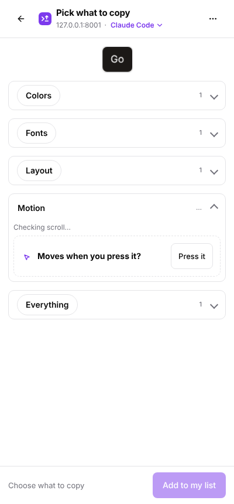
5Press it
In Motion, for buttons and links.
Rows at the end of Motion
- Scroll check result always, automatic
- Moves when you press it? + Press it things you can press
- Moves when the page opens? + Reload when an opening animation was missed
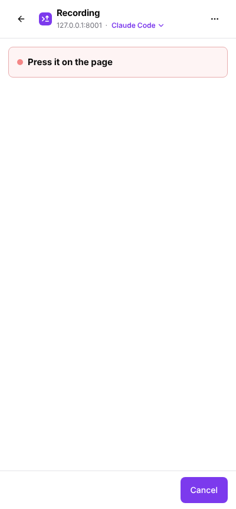
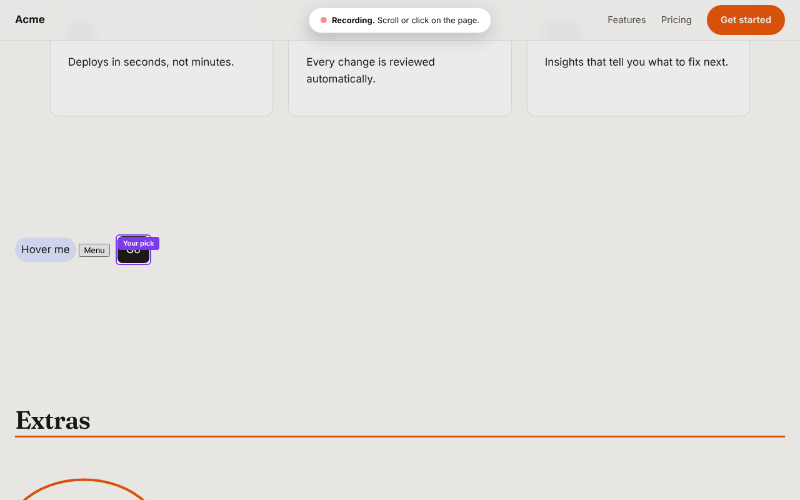
6Recording
After "Press it". Picking pauses.
Panel
- Callout: Press it on the page
- What has moved so far, live
- Bottom: Cancel → Stop once something moved; finishes by itself after a press
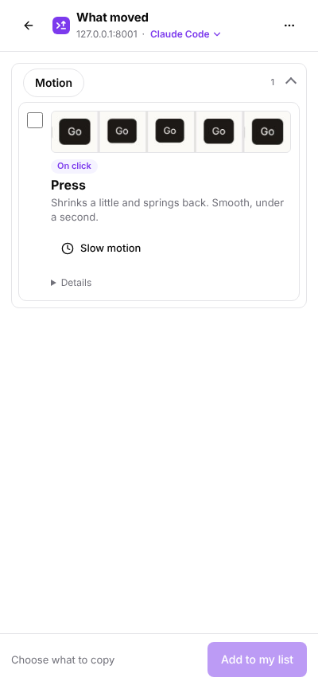
7What moved
After recording.
Panel
- The same pick card: Motion with a card per movement and its preview
- Bottom: Add to my list
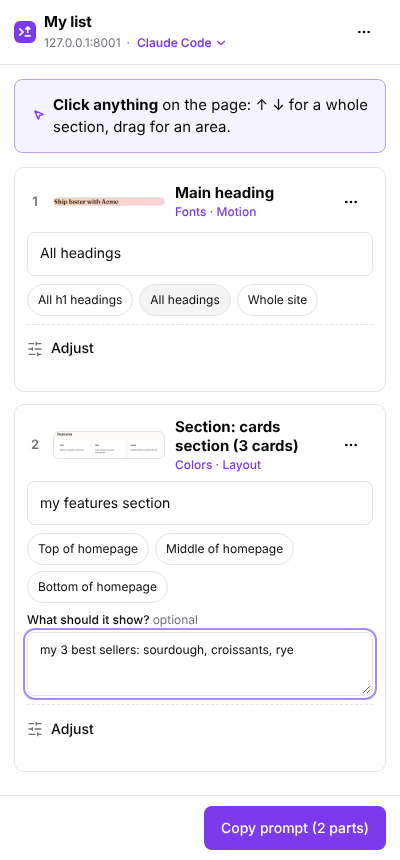
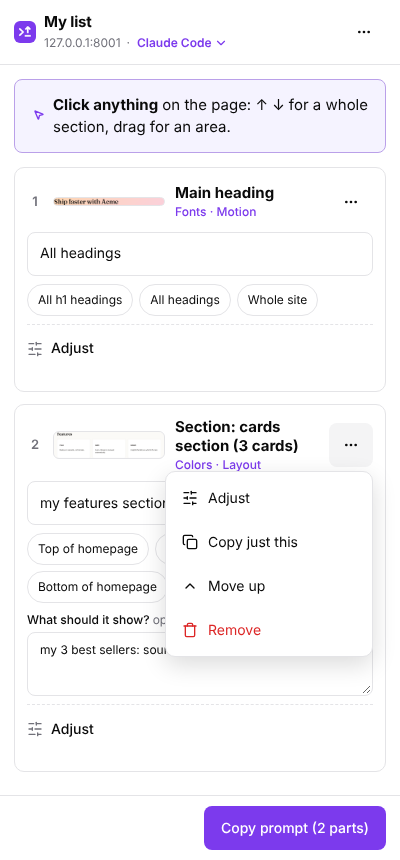
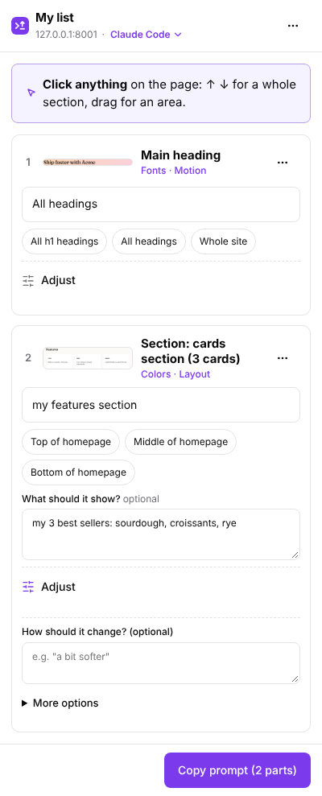
8My list
After adding: the main screen. Picking stays on.
Each row
- Number, preview (moving for animations), name, and what it copies ("Colors · Layout")
- Where on my site optional: type it or tap a chip that fits (All h1 headings, Top of homepage…); empty = list order, top to bottom
- What should it show? parts that hold content
- Adjust (closed): how it should change, quick tweaks + Show on page, exact numbers, Make a new picture from this
- ⋯: Adjust · Copy just this · Copy picture · Move up / down · Remove
Bottom bar
- Copy prompt (N parts): the whole list, one message. The list stays.
The prompt that gets copied
One message for the whole list, shaped for the chosen AI app.
Structure
- Shaped for the AI app: tagged sections for Claude; Markdown for ChatGPT, Gemini, code editors and site builders; chat apps use files already given, or ask once; site builders get a short opening
- Opening, one for both situations: only these changes, where each says, keep the rest; if there is no site yet, build one top to bottom (own values, ask what it is about, shared variables); look through my project and reuse its fonts, colors, corners and spacing; values exact, not inspiration
- For every detail below rules that apply to two or more: said once
- <shared_spacing> 2+ layouts: one side padding, content width, section spacing, gaps
- <one_look> only when the parts disagree: one pair of fonts, one accent, one set of corners, one shadow, one button style, one easing
- <design_detail id="N"> per part: <where_on_my_site>, <what>, <values>, <fit_to_my_site> (colors by role → mine unless Colors was chosen; fonts: where, how to load, keep mine; layouts: keep its place, what goes in it, the color relationships, my edges; color schemes: into my color settings, readable, blended), <content_i_want>, <change_i_want>, <note> (numbered pictures)
- <when_done>: make every change for real; rebuild a layout that differs; end with each detail as old → new; chat apps return the complete file
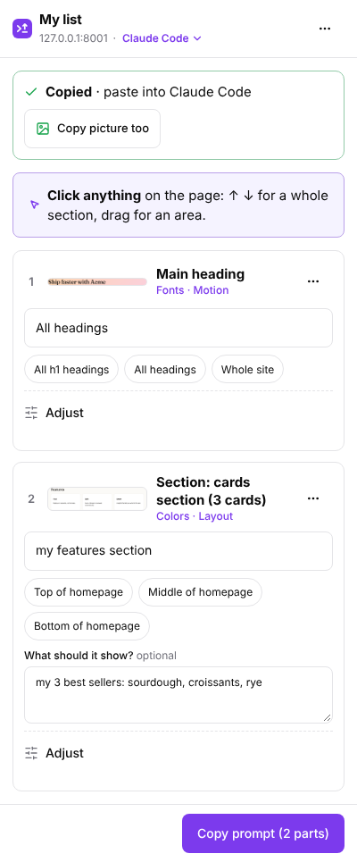
9Copied
After Copy prompt.
Panel
- Notice: Copied · paste into Claude Code, with Copy picture 1, 2… for the numbered pictures
- The list, unchanged: change it and copy again
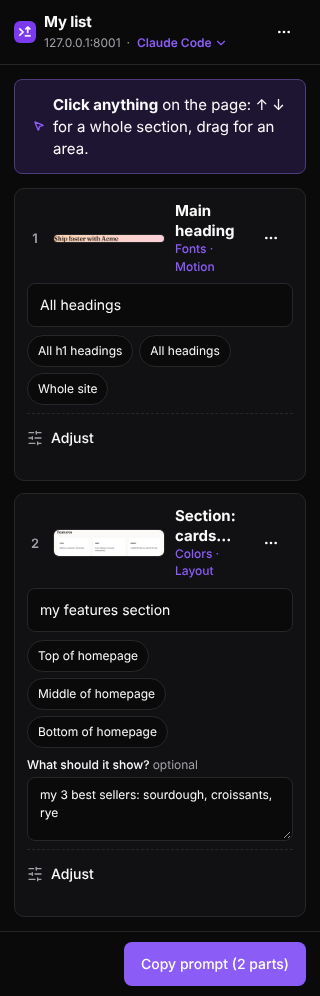
10Dark theme at 320px
Every screen works down to 320px wide, in light and dark.
Notes
- Rows wrap; touch targets stay at least 44px